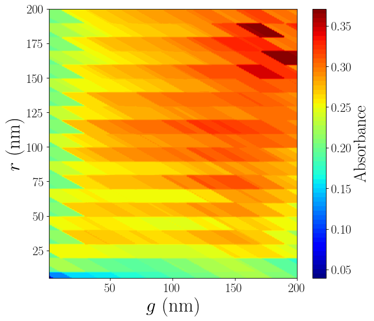
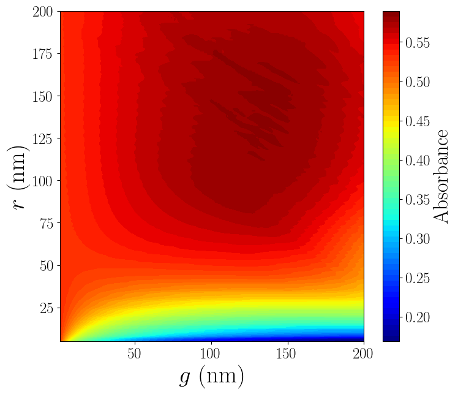
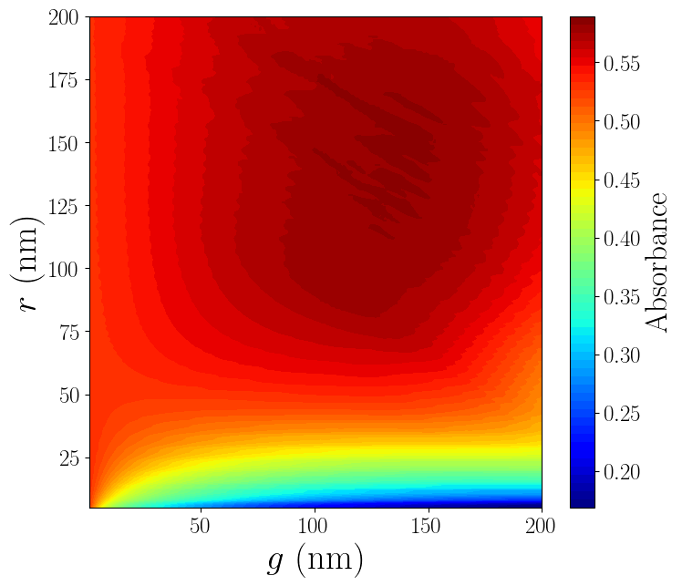
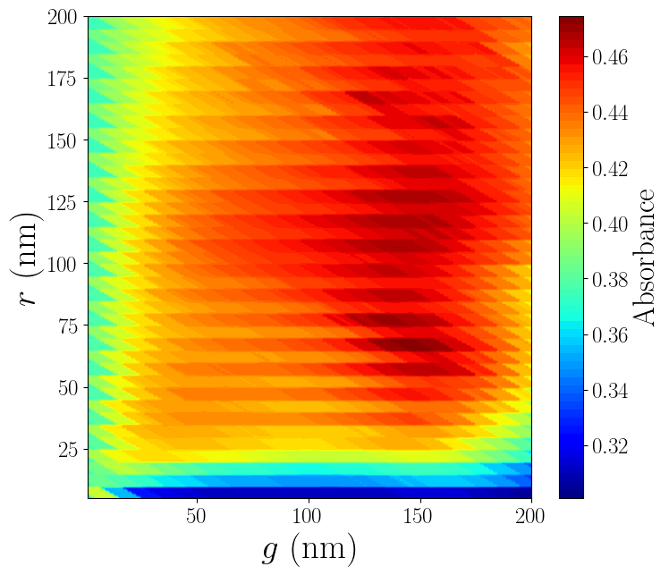
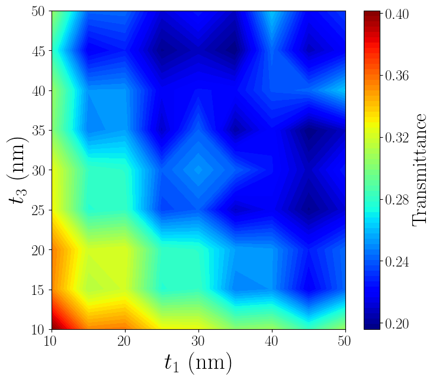
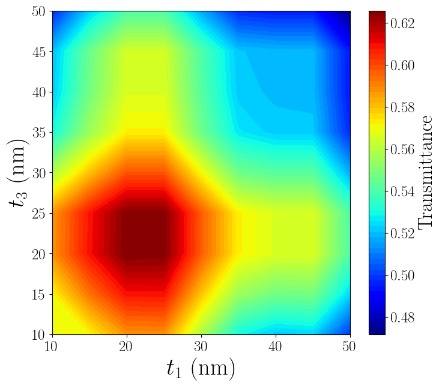

Visualization
Three-layer film, TiO2/Ag/TiO2 (low fidelity, medium fidelity, and high fidelity)
Three-layer film, TiO2/Au/TiO2 (low fidelity, medium fidelity, and high fidelity)
Three-layer film, TiO2/Cu/TiO2 (low fidelity, medium fidelity, and high fidelity)
Three-layer film, TiO2/Ni/TiO2 (low fidelity, medium fidelity, and high fidelity)
Three-layer film, AZO/Ag/AZO (low fidelity, medium fidelity, and high fidelity)
Three-layer film, cSi/Ag/cSi (low fidelity, medium fidelity, and high fidelity)
Three-layer film, ITO/Ag/ITO (low fidelity, medium fidelity, and high fidelity)
Three-layer film, ZnO/Ag/ZnO (low fidelity, medium fidelity, and high fidelity)
Anti-reflective nanocones, fused silica (low fidelity, medium fidelity, and high fidelity)

Vertical nanowires, cSi (low fidelity, medium fidelity, and high fidelity)
 

Vertical nanowires, CH3NH3PbI3 (low fidelity, medium fidelity, and high fidelity)

Vertical nanowires, GaAs (low fidelity, medium fidelity, and high fidelity)
Close-packed nanospheres, cSi/TiO2 (low fidelity, medium fidelity, and high fidelity)

Close-packed nanospheres, CH3NH3PbI3/TiO2 (low fidelity, medium fidelity, and high fidelity)
Close-packed nanospheres, GaAs/TiO2 (low fidelity, medium fidelity, and high fidelity)
Three-layer film with double-sided nanocones, TiO2/Ag/TiO2/TiO2/TiO2 (low fidelity, medium fidelity, and high fidelity)
Three-layer film with double-sided nanocones, TiO2/Au/TiO2/TiO2/TiO2 (low fidelity, medium fidelity, and high fidelity)
Three-layer film with double-sided nanocones, TiO2/Cu/TiO2/TiO2/TiO2 (low fidelity, medium fidelity, and high fidelity)
Three-layer film with double-sided nanocones, TiO2/Ni/TiO2/TiO2/TiO2 (low fidelity, medium fidelity, and high fidelity)
Three-layer film with double-sided nanocones, AZO/Ag/AZO/AZO/AZO (low fidelity, medium fidelity, and high fidelity)

Three-layer film with double-sided nanocones, cSi/Ag/cSi/cSi/cSi (low fidelity, medium fidelity, and high fidelity)
Three-layer film with double-sided nanocones, ITO/Ag/ITO/ITO/ITO (low fidelity, medium fidelity, and high fidelity)
